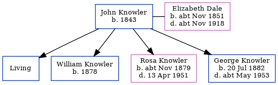

John Knowler 1843 -
[ Home ] | [ Calendar ] | [ Surnames Index ] | [ Family History ]John Knowler, the husband of Elizabeth Ann Dale (the first cousin four-times-removed on the father's side of Nigel Horne), was born in Chilham, Kent, England in 18431 and married Elizabeth (with whom he had 4 children: Arthur John, William Edward, Rosa Ellen and George, along with 1 surviving child) at St Mary, Chartham, Kent, England on Oct 14, 18732.
Throughout his life, John lived in several places: in Birling, Kent, England on Apr 3, 18813 and on Apr 5, 18914; at The Lees in Chilham on Mar 31, 19015; at Round Oast Cottage, Ospringe, Kent on Apr 2, 19116; and at Halfway Road, Minster, Minster In Sheppey, Sheppey, Kent in 19211 and on Jun 19, 19211. John In 1921 he was working at Mr Pierson Nursey Owners.
Children
- William Edward was born in 1878
- Rosa Ellen was born c. Nov 1879
- George was born on Jul 20, 1882
Citations
- 1921 Census Of England & Wales - Findmypast (was age 79 and the father-in-law of the head of the household)
- England & Wales Marriages 1837-2005 - Findmypast
- 1881 England, Wales & Scotland Census - Findmypast (was age 35 and the head of the household)
- 1891 England, Wales & Scotland Census - Findmypast (was age 46 and the head of the household)
- 1901 England, Wales & Scotland Census - Findmypast (was age 58 and the head of the household)
- 1911 Census for England & Wales - Findmypast (was age 68 and the head of the household)
Media
1891 England, Wales & Scotland Census - GBC/1891/0005718390
Family Tree
Generated by ged2site. Last updated on Nov 13, 2024